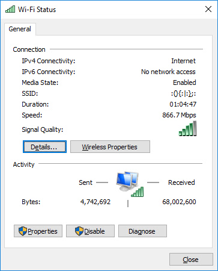
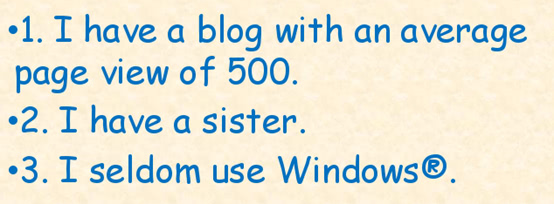

在Cisco实习的经历
文章目录
好吧，这是俺第一篇连续五天写出来的博文（面试什么的是俺的回忆啦）。
实习生申请
本来吧，在今年春季学期开学的时候，我是打算投另一个很有名的Y公司的，可以说得上是孤注一掷吧；后来偶然听说Cisco也来招聘实习生，于是我就去申请了。在五月末六月初，经过投递简历、宣讲会、笔试和面试，终于得到了offer，那时候也恰好是得知自己通过专八的时候，于是大学的俩梦想就这样完美了。嘿嘿，可是第三个梦想呢，遥遥无期，毫无希望，也许就是这样吧。
后来看到邮件，果然没有通过Y公司的简历筛选，你丫丫，我很认真的投递简历的哎，反正……据说Y公司在我这也不是这家公司的正统业务，也正好吧。
据统计，Cisco总计收到了简历700多封，其中大概有300人通过笔试进入面试，最后在面试中成功获得offer的有60人左右，俺还是蛮幸运的吧，哈哈。
说说俺对这家公司的印象或者说是感觉？其实俺因为某些原因一直对这公司有一点点不先入为主的、太好的印象的，具体是啥原因呢，俺不能说，说了就暴露了哈哈。
宣讲会与笔试
我一共参加了两场宣讲会，一场是我自己学校的，另一场是陪另一个因故无法参加此次宣讲会的小伙伴去别的学校参加的。不得不说，大公司就是不一样，足足讲了接近两个小时吧，介绍了Cisco的历史以及一些福利待遇什么的。
宣讲会之后自然是进行笔试了，笔试试题的是彩印的，印刷质量很好，并且Cisco的HR反复强调不要在试题册上作答，因为他们要循环利用这个试题册（从页眉上也能看出来这套试题用了很多次了）。
那笔试内容都有啥呢？
好吧，咱得说，这试题基本上都是英文的，难度不是很大，题型很活跃涉及范围很广泛，其实也可以说是很逗的啦。具体内容就不太方便多说啦。
Cisco不会以笔试题的成绩来卡分，就是说，不是只有某个特定分数（比如说60分）以上的人才有面试的机会，应该是要综合看简历的吧。
没有回答上问题的面试
关注俺推特的小伙伴们可能知道俺面试都经历了啥。其实也没啥好说的，就是HR会看俺的简历，然后跟着简历问一些问题，态度超级和善有说有笑的；之后又进行了一次语言的面试，就是随意的聊聊天，不讨论技术问题。
俺自我感觉吧，俺这个专八是白过了，英语说得一塌糊涂，哎，看来表达能力还需要提高啊，哎哎哎！
实习开始之前……
唔……好吧，自然是准备各种资料啊什么的，当然还有一个非常重要的、严肃的问题就是租房子。咦，这可要感谢俺姐、俺姐夫还有俺娘（小嘎：那我呢？哎你一边吃糖去哈J）。
俺周末的时候在公司附近跑了两天，怎么说呢——好货不便宜呗。最终俺还是花了实习补助的一大半租了一个比较如意的小房间吧。哎……
之后俺就在想，也很纠结啊，得想办法赚点外快了，要不真的很难生活在这市中心啊。鉴于俺过了专八、有着不错的IT功底，给人翻译点东西、做做课设毕设啥的补贴下昂贵的房租和生活成本，应该还是可行的吧。不知道读者们（推友们）有何更好的建议？俺很想知道，俺想要多赚点钱啊。
很快，自己的生活就要开始了，需要自己打理好一切，而这和学校无忧无虑的生活是不一样的！
Orientation!!!
实习生 Day 1
以前在上课的时候，俺总是早上第一个到的人，实习生活第一天竟然六点半就醒了。起来洗漱收拾，准备好材料到公司发现早就有人到了。
HR姐姐带我们去了会议室，这个会议室叫啥呢，俺不能说，说了就又暴露了，哎写个文章也不容易。但是俺知道这个会议室名字的时候是一脸吃惊的(⊙ˍ⊙)
之后HR姐姐为我们发放了badge（就是员工身份牌），还有check list，桌面上也放着一份这一周的schedule。
在check list上写着员工的编号，右侧还告诉俺们怎么连Wi-Fi。要知道在学校，我可是我那一层楼第一个连接上校园网的人（我上学的时候入住的是新楼，那时候新楼的校园网还没有建设好），于是俺就争做第一人，用我的身份连接上了公司的Wi-Fi。公司自然是使用WPA2-Enterprise啦，也就是802.1x。
连上Wi-Fi的第一件事情是什么，打开ip.cn看看是哪个运营商，再用speedtest测速。得出的结果令我震惊：香港的IP、速度超过4000KB/s。哦我的天，能直接翻墙？立刻打开推特，哇真的能啊！而且还能多点登录哦，再也不用担心莫名其妙的掉线、被踢什么的了。
从那一刻起，我就已经下定决心要好好努力留在Cisco了，这环境简直爽歪歪啊！
少年，人心是会变的！
Speedtest测速
中午的时候，Cisco提供了一个"welcome lunch"，还是很丰盛的（可以说是我近几天以来吃过的最丰盛的一顿饭吧），之后我和几个小伙伴去附近转了转，一些设施还是很齐全的。
为了让我们互相认识，首先来了个自我介绍，哎，玩王者荣耀的人这么多？俺说的啥？俺喜欢写博客，也喜欢读博客呗，嘿嘿。然后HR叫我们准备一个名字为"3 facts"的游戏，这是个啥呢，就是写三个关于自己的事情，其中有一个是假的，让大家猜猜哪个是假的，2 facts and a lie嘛，哈哈。
晚上的时候，Cisco开始发东西啦，发了一件T恤，一个质量很不错的电脑包，当然还有电脑啦。看着身边的小伙伴们一个一个拿着崭新的、带着包装盒的ThinkPad X1 Carbon，我那叫一个羡慕啊。轮到我的时候，竟然给我发了个旧的ThinkPad T440 🙁 ，貌似我这个职位（大概十几个人）都给的旧的？虽说吧，给俺发的是旧电脑，但是成色也是不错的，配置也很不错，就是那贴纸暴露了上一个主人一定是个可爱的萌妹子。当然啦，俺要重点说说X1，Cisco给发的是i7版的X1（貌似是顶配了），这个本超级轻，也很薄，真的和MacBook一样轻薄，而且显示效果很炫彩很鲜艳，有键盘背光，256G的固态还支持指纹，哇我真是一脸羡慕。
俺这电脑配置其实也很牛，网卡都是双频，支持5G哦。

这内网传文件，恐怕是要爽到爆啊
很明显这电脑都是"特殊定制"的，需要输入我自己的身份认证信息才能用，之后就是一些配置啦，配置IM、视频会议系统和VPN啦。不要一提到VPN就想到翻墙，VPN的设计初衷是为了让员工们在家就能访问到企业内网而达到远程办公的目的的。当然啦，如果我在不能翻墙的地方用VPN连接到公司，那就应该能翻墙了。啊哦对，别想着跟俺借这个账号，俺是不会答应的！
关于工作时间？基本上就是朝九晚五那样吧其实是不打卡，弹性工作时间，双休，还是很幸福的。了解我的小伙伴们可能知道，我本人非常讨厌996，内心也是拒绝加班的，因为我很"懒"啊，这也是我讨厌某些企业（比如说华为，可以说是跳梁小丑了）的原因之一。俺不是来出卖劳动力或者是充当廉价劳动力的，俺是来实现自我价值、努力求得共赢的。哎嘿嘿什么蛇和大象？
晚上HR姐姐跟我们说，注册个Facebook？五个月之前我才删除Facebook账号啊，要不要这么悲剧？新注册的还被suspend了……
哦对了，得说下，这里的session讲的PPT什么的全都是英文的，不用说电脑也是英文版的Windows 10，毕竟嘛……好吧，学好英语真的很重要啊，非常重要的啊，特别重要啊，英语不好真的特别吃亏的（哪怕读者们外语主修不是英语）……俺在半年前的《除了技术》里已经很强调这一点了。
实习生 Day 2
Day 2的时候，也就是各种介绍什么的。当然了，有我最喜欢的3 Facts呀！这个过程还是很欢乐的，尽管我还是没能记下来几个名字。有些童鞋们真的是演技派，有些一眼就能看出来在说谎。要不要大家看看我的3 Facts？虽说还没有轮到我上台编瞎话。

我的 3 facts
读者们来猜猜？我想大部分人都会猜错哦。想要猜的小伙伴可以给我发Telegram、Twitter私信或者邮件、本文评论，万一猜中有奖呢是不！
后来我们需要做一个online courses and tests，自然要把电脑搬回家连VPN了┗|｀O′|┛ 嗷~~
俺这个职位，还是要学习很多东西的（虽说大部分俺都稍有接触）比如说Linux啦，Python/Java/Shell啦，，数据库啦。太多就不方便说了
啊呀对呢，在会议休息的时间，还有零食和饮料呢，(╹ڡ╹ )
实习生 Day 3
第三天的时候，安全部门的前辈们来给我们介绍了一些信息安全的常识吧，比如说木马呀、钓鱼邮件呀， 一些注意事项比如说使用指定的电脑以及badge、网络使用条例（比如说不能用P2P下载啊什么的）、防止尾随等等保护公司知识产权和财产的措施与手段。
俺们公司的文件，一共有四个等级，估计大部分公司都是这样的，对外公开的，机密的，还有更高等级更机密的两种。比如说我们这几天培训的资料、笔试题，就属于机密这个"第二机密"的。所以你看在这，我不能把check list、培训网页的截图等等信息分享出来。
啊哟对了，今天轮到我上台做3 facts，为啥大家都在笑呢，是因为俺太滑稽了吗？好吧，俺编瞎话的能力还是很强的，每个fact都有很多人认为是假的。可是认为第一个是假的的童鞋们，要对俺有信心啊！俺博客……以后的某天，日均PV肯定会过500的啊！
下午的时候，俺这个小部门的人去见了mentor，就是宣讲会的时候那个特特特帅的大哥哥！俺这个部门的人比较少，只有九个，因为可能是筛选了一些自学能力非常强的童鞋吧。从此以后俺们就是一家人了，请让俺在看会照片记一下大家的脸。我们大概也就谈了谈以后将要学习哪些语言和工具，咦，看来Python真的是世界上最好的语言了，欢迎PHP党来戳死俺。好吧，Python + Flask，俺相信友情链接和推友里一定有这方面的老鸟。还望多多关照、不吝赐教！
实习生 Day 4
今早我们做了一个很好玩的小游戏，就是分成几组，每组都给一张纸，上面写着会唱歌、会跳舞、会剪辑视频、参加过某某比赛等内容，然后需要到其他组找到这样的人然后来签名。第一个完成的组就算赢了。咦，那些会跳舞会唱歌的孩子们自然……要证明他们没有说谎了哦！
之后的一个环节是屏幕上显示出Cisco的六个价值观，比如说change the world，innovation，do the right thing等等，让我们自我选择，然后上台演讲说说自己对选择的这个价值观的一些理解吧。当然啦，俺非常喜欢Google的那句"Don't be evil"，所以自然而然的选择了Do the right thing。可是可怕的事情来了，选择俺这个的，总计才有三个人。其实想一想，人少也是有好处的，这样每个人上台表现的时间就会多了（虽说好像有的时候不知道该说什么的时候，冷场确实蛮尴尬的）。
其实回忆下，我在很多人面前演讲啊什么的次数并不是很多，还总是有那么点害怕和胆怯吧。
所以，对于这个话题，俺都说了些啥？俺自然是从"不作恶"出发，说了些怎么才算"不作恶"，对待极权政府的不合理审查应该怎样面对。顺便说了下我曾经的博文里说过的内容，比如说net neutrality啊什么的。
Speak not because it is safe, but because it is right.
实习生 Day 5
Day 5话，其实没什么事情，就是去完成check list，下午去了趟“Giving back”做志愿者，晚上和大家一起TB。TB是个啥呢？当然不是淘宝了，就是“Team Building”，俺也不知道咋翻译，简单理解就是聚餐吧。终于在和吃饭的时候认识全了我这个部门的9个人，又认识了一个漂亮的学姐，哈哈，好开心！
于是，orientation就算是结束了，终于迎来了周末；下周，学习生活算是真正开始了吧……嗯哼。
最后的一些感想
或者说是感悟吧，嗯哼？
就是俺觉得，Cisco真的挺不错的；办公环境很好，员工的福利也很多（尽管俺是实习生），前辈们也很有耐心，很多原因吧。至少俺要留在Cisco。
哦对了，小计划的一颗种子已经埋下来了呢。尽管可能没人在乎，似乎本身就应该没人在乎啊。但是那晚谈话的每一句话真真切切的是认真的呢。虽说我依旧在孤注一掷（孤注一掷似乎成为了我最大的缺陷，明知道结果却还那么傻），但是，谁知道呢，谁在乎呢。哈哈，文风瞬间转成"I don't give a shit"，好吧(；′⌒`)
当然，俺得努力，"虽说title是实习生，但是要把自己当作正式员工看待"，很没底气的说，俺终于可以努力去当第一名了，毕竟这是俺从小以来的爱好，毕竟这是俺喜欢的东西，毕竟俺叫小土豆（这个，育碧的土豆不好吃也不能吃，容易中毒。珍爱生命远离毒……土豆）。
俺经常说Remember me，亲爱的你，你说是不是？
人生啊，总是会发生变动的。总有一天我也会离开Cisco，那么我是会开心还是会后悔呢。我不知道，至少现在还不知道。也许到那天，我会再写一篇来说说这件事情吧。
本站默认采用CC-BY-NC-SA 4.0协议进行授权 转载必须包含本声明，并以超链接形式注明原作者和本文原始地址


评论
63 条评论